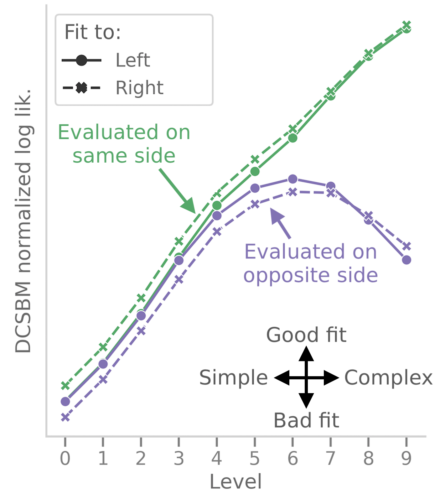
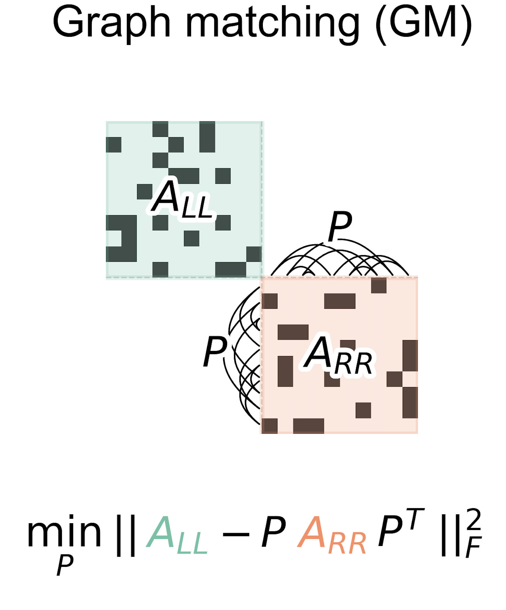
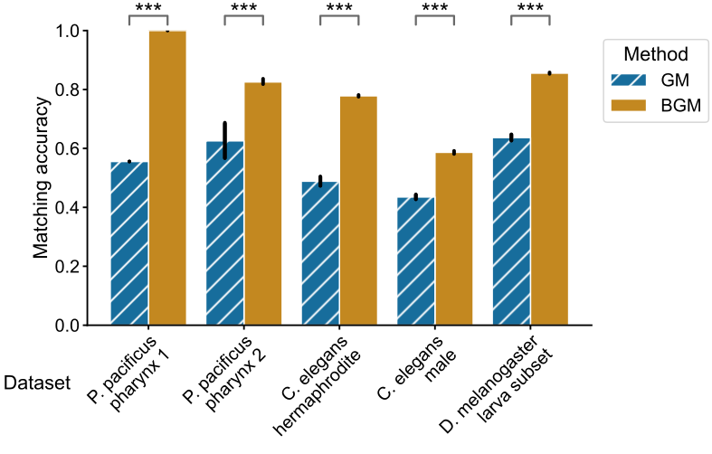
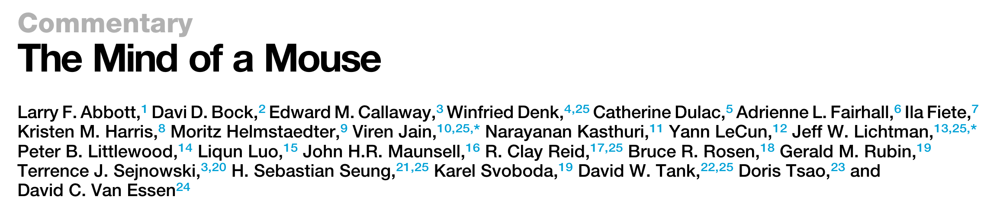

Analytical tools for connectomics
Contents

Analytical tools for connectomics#
Thesis committee meeting#
Benjamin D. Pedigo#
(he/him) NeuroData lab Johns Hopkins University Department of Biomedical Engineering
 bpedigo@jhu.edu
bpedigo@jhu.edu
 @bdpedigo (Github)
@bdpedigo (Github)
 @bpedigod (Twitter)
@bpedigod (Twitter)
 bdpedigo.github.io
bdpedigo.github.io
Outline#
Prior work
Connectome of an insect brain
Analysis of bilateral symmetry
Matching neurons between brain hemispheres
graspologic
Future work
On the power of comparative connectomics
Collaborative real-data investigations
Graduation plan
Larval Drosophila brain connectome#
 ~3k neurons, ~550K synapses
Both hemispheres
~3k neurons, ~550K synapses
Both hemispheres

Analysis of the maggot brain#
Clustering neurons by connectivity
Network “sorting” (from sensory \(\rightarrow\) motor)
Analysis of different “edge type” (e.g., axon \(\rightarrow\) axon vs. axon \(\rightarrow\) dendrite)
Assessing neuron pairings via graph matching
Methods for understanding potential signal transmission (“cascades”)
Neurons clustered by connectivity using recursive spectral clustering#


Stochastic block model#
Edge probabilities are a function of a neuron’s group

Using models to evaluate cell type groupings#
Clustering nodes corresponds with inferring groups in a stochastic block model (DCSBM)…
How well do these models generalize to the other side of the brain (let alone the next maggot)?

Outline#
Prior work
Connectome of an insect brain
Analysis of bilateral symmetry
Matching neurons between brain hemispheres
graspologic
Future work
On the power of comparative connectomics
Collaborative real-data investigations
Graduation plan
Bilateral symmetry#
“This brain is bilaterally symmetric.” -Neuroscientists
“What does that even mean? And how would we know if it wasn’t?” -Us
Are the left and right sides of this connectome
different?#
Are these networks different?#

Want a two-network-sample test!
\(A^{(L)} \sim F^{(L)}\), \(A^{(R)} \sim F^{(R)}\)
\(H_0: \color{#66c2a5} F^{(L)} \color{black} = \color{#fc8d62}F^{(R)}\)
\(H_A: \color{#66c2a5} F^{(L)} \color{black} \neq \color{#fc8d62} F^{(R)}\)
Group connection test#

Detect differences in group connection probabilities#

5 group-to-group connections are significantly different (after multiple comparisons correction)
Overall test (comparing all blocks):
p-value \(<10^{-7}\)
To sum up…#
“This brain is bilaterally symmetric.” -Neuroscientists
Depends on what you mean…
With Kenyon cells#
Model |
\(H_0\) (vs. \(H_A \neq\)) |
p-value |
|---|---|---|
ER |
\(\color{#66c2a5} p^{(L)} \color{black} = \color{#fc8d62}p^{(R)}\) |
\({<}10^{-23}\) |
SBM |
\(\color{#66c2a5} B^{(L)} \color{black} = \color{#fc8d62} B^{(R)}\) |
\({<}10^{-7}\) |
daSBM |
\(\color{#66c2a5}B^{(L)} \color{black} = c \color{#fc8d62}B^{(R)}\) |
\({<}10^{-2}\) |
Without Kenyon cells#
Model |
\(H_0\) (vs. \(H_A \neq\)) |
p-value |
|---|---|---|
ER |
\(\color{#66c2a5} p^{(L)} \color{black} = \color{#fc8d62}p^{(R)}\) |
\({<}10^{-26}\) |
SBM |
\(\color{#66c2a5} B^{(L)} \color{black} = \color{#fc8d62} B^{(R)}\) |
\({<}10^{-2}\) |
daSBM |
\(\color{#66c2a5}B^{(L)} \color{black} = c \color{#fc8d62}B^{(R)}\) |
\(\approx 0.51\) |
We made many assumptions, including…#
We knew the group for each neuron
No edge weights
Neurons not paired between the hemispheres
Outline#
Prior work
Connectome of an insect brain
Analysis of bilateral symmetry
Matching neurons between brain hemispheres
graspologic
Future work
On the power of comparative connectomics
Collaborative real-data investigations
Graduation plan
Bilaterally homologous neuron pairs#
We believe a matching exists!

Estimating neuron pairing using graph matching#


~80% agreement with an expert annotator.
Thus far, we’ve not used the contralateral connections#
These are about 1/3 of the edges in the brain!#
From graph matching to bisected graph matching#

We show how BGM can be solved via a simple modification of the FAQ algorithm
Contralateral connections are helpful!#

Outline#
Prior work
Connectome of an insect brain
Analysis of bilateral symmetry
Matching neurons between brain hemispheres
graspologic
Future work
On the power of comparative connectomics
Collaborative real-data investigations
Graduation plan
How to use these (and other) tools?#
graspologic#
github.com/microsoft/graspologic


Outline#
Prior work
Connectome of an insect brain
Analysis of bilateral symmetry
Matching neurons between brain hemispheres
graspologic
Future work
On the power of comparative connectomics
Collaborative real-data investigations
Graduation plan
Comparative connectomics as means to link connectome to diverse properties#
Map connectomes from related individuals/organisms which may differ in feature \(X\):
Genome
Behavioral patterns/habits
Life experience
Developmental stage
…
Compare connectomes
Understand how \(X\) {affects, is affected by, is associated with} connectome structure

Connectome \(\leftrightarrow\) memory#
…the acquisition of wiring diagrams across multiple individuals will yield insights into how experiences shape neural connections.
Connectome \(\leftrightarrow\) disease#
The first step would be to learn what the normal wiring diagram is […] it should be feasible to do many additional connectomes […] of animal models of brain disorders
Why is comparative connectomics hard?#
Collecting the data is still a large effort…#
But how do we even compare connectomes once we have them?#
On the power of comparative connectomics#
Extend simple network comparison tests we proposed in Pedigo et al. (bilateral symmetry manuscript), e.g.,
Tests for weighted models
Tests for paired/matched networks
Tests when group structure is not known
Study power of these approaches in simulations based on real connectome data (e.g, maggot memory and learning center)
Provide recommendations for future comparative connectomics experiments
A motivating comparative connectomics experiment…#
Optogenetically activate mushroom body input neurons (DANs) which convey reward or punishment
Map connectomes, look for changes in KC \(\rightarrow\) MBON connectivity (and other subgraphs)
How big does the {sample size, effect size} need to be such that we can detect a change 95% of the time?
Example: neuron pairs can facilitate more powerful tests#
Simulation:
Generate an Erdos-Renyi \((50,0.1)\) network (\(A\))
Perturb a copy of it (\(B\)) (add some # of edges)
Test for differences between \(A\) and \(B\) (density comparison)

Outline#
Prior work
Connectome of an insect brain
Analysis of bilateral symmetry
Matching neurons between brain hemispheres
graspologic
Future work
On the power of comparative connectomics
Collaborative real-data investigations
Graduation plan
Male adult nerve cord connectome#

Collaboration with Jefferis group
~15k neurons
Similar questions to maggot brain, e.g.,
Connectivity types
Matching neurons
Bilateral symmetry, segmental homology
Linking behaviorally characterized neurons to a connectome#

Collab. w/ Zlatic group
~70 neuron pairs linked to connectome
Goal: compare neighborhoods of each, detect signatures of “similar behavior neurons”
A few others…#
Testing for “edge-level” stereotypy (Cardona lab)
Analysis of Drosophila visual connectome (Reiser lab + Janelia)
Analysis of network time series over learning in simulation (Zlatic lab)
Outline#
Prior work
Connectome of an insect brain
Analysis of bilateral symmetry
Matching neurons between brain hemispheres
graspologic
Future work
On the power of comparative connectomics
Collaborative real-data investigations
Graduation plan
Summary of work so far#
Summary of work to be done#
Acknowledgements#
Team#
 Michael Winding
Michael Winding
 Mike Powell
Mike Powell
 Eric Bridgeford
Eric Bridgeford
 Ali
Ali
Saad-Eldin
 Jaewon
Jaewon
Chung
 Marta Zlatic
Marta Zlatic
 Albert Cardona
Albert Cardona
 Carey Priebe
Carey Priebe
 Joshua Vogelstein
Joshua Vogelstein
Tracers who contributed to larva connectome, Heather Patsolic, Youngser Park, NeuroData lab, Microsoft Research Figures from Scidraw + Noun Project (Alexander Bates, Xuan Ma, Gil Costa, Vivek Kumar, Leslie Coonrod)
Funding#
NSF Graduate Research Fellowship (B.D.P.), NSF CAREER Award (J.T.V.), NSF NeuroNex Award (J.T.V and C.E.P.), NIH BRAIN Initiative (J.T.V.)
Feedback?#
Benjamin D. Pedigo#
bpedigo@jhu.edu
@bdpedigo (Github)
@bpedigod (Twitter)
bdpedigo.github.io